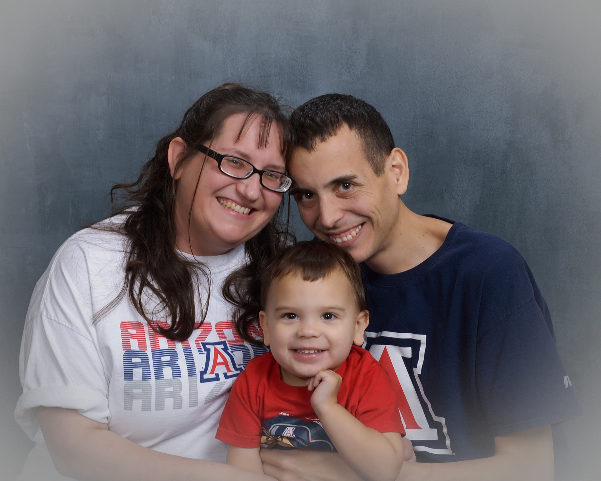

|  |
Arturo FedericoSenior IT Business Analyst, Banner Health My name is Arturo Federico and I graduated from the University of Arizona's Eller College of Management with a Bachelors of Science in Business Administration and Management Information Systems. Later, I went back to school and earned my Master's of Science in Management Information Systems in 2013. Since my graduation I worked for many companies before working Banner Health. |
| Date | Company | Work |
|---|---|---|
| 2022 - Present | Banner Health | Sr. IT Business Analyst |
| 2018 - 2022 | The University of Arizona, College of Madicine | IT Business Analyst, IT Support Analyst |
| 2015 - 2018 | Intuit Inc. | Sr. IT Supportability Specialist |
| 2014 - 2015 | Amadeus Revenue Integrity | Project Manager |
| 2013 - 2013 | Ford Motor Credit Company | IT Summer Intern / Business Analyst |
| 2011 - 2014 | The University of Arizona, Eller College of Management | IT Support Center Specialist |
| Business Analysis | ⭐️⭐️⭐️⭐️⭐️ | Java | ⭐️⭐️⭐️⭐️⭐️ |
| Project Management | ⭐️⭐️⭐️⭐️⭐️ | Office 365 | ⭐️⭐️⭐️⭐️⭐️ |